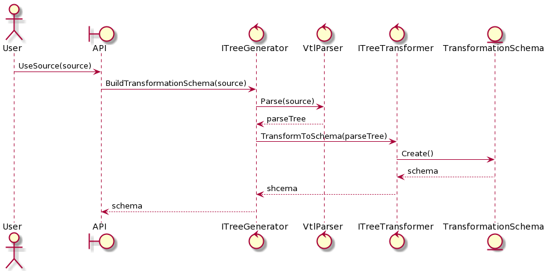

Dynamika systemu
Scenariusz 1: Wygenerowanie kodu wynikowego
Aplikacja konstruuje niezbędne obiekty i określa model danych oraz mapowanie nazw. Następnie metoda TranslateVtlProgram generuje obiekt reprezentacji pośredniej. Ewentualne błędy translacji znajdują się w kolekcji schema.Errors. Kod wynikowy jest renderowany przez metodę Render.
Przykładowy kod
// fabryka obiektów
ObjectFactory fac = new ObjectFactory();
// będziemy generować kod SQL
IRenderTarget target = new SqlRenderTarget();
// przygotowanie obiektów procesora i renderera
VtlProcessor processor = fac.GetVtlProcessor();
Renderer renderer = fac.GetVtlRenderer(this.target);
// model danych
IDataModel model = new DataModel("model.xml");
// translacja programu do postaci schematu transformacji
ITransformationSchema schema = this.processor.TranslateVtlProgram(program, this.model);
string result = this.renderer.Render(schema, this.mapper);

Figure 1. Diagram